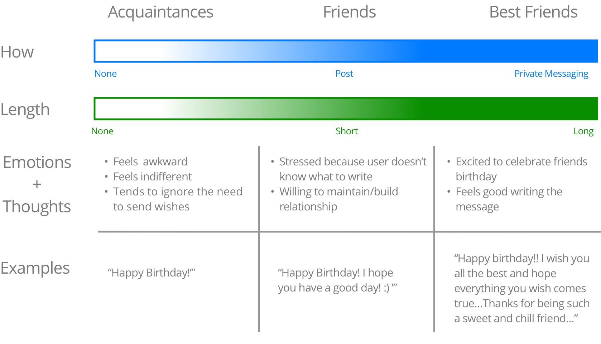
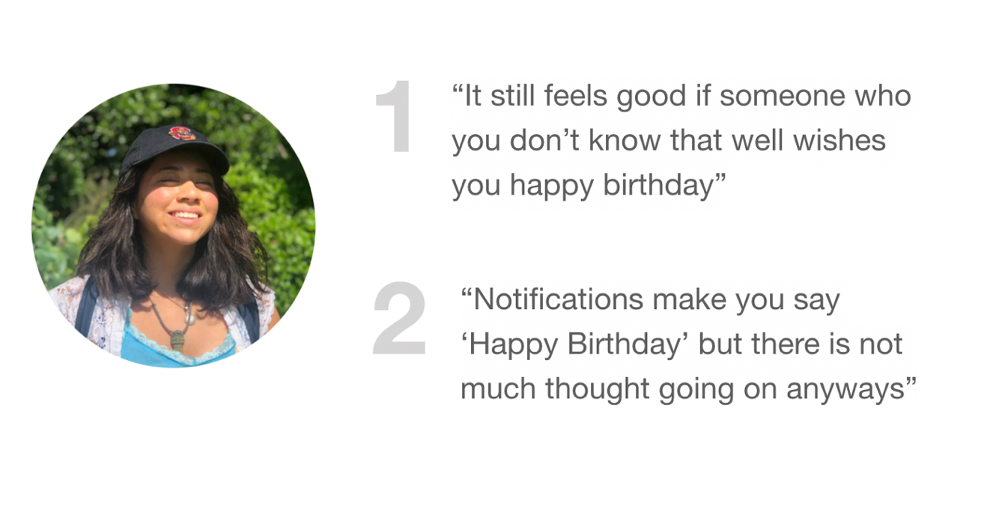

In this project, I redesigned the end-to-end birthday experience on Facebook. After user research, I found that people find it awkward and impersonal to write on someone elses birthday timeline. People react emotionally differently to different people, and the way we communicate those thoughts differ according to our prexisting relationship. The birthday card signature feature attempts to bridge the awkwardness between users when celebrating birthdays on Facebook.
Before conducting user research, I wanted to understand usability improvements on the current experience. Some pain-points I found are the following:
I interviewed 6 Facebook users to understand their pain-points. I learned that pre-existing relationships matter when users celebrate others birthdays on Facebook. Broadly the ‘closeness’ between users to were categorized into 3 types: acquaintence, friend, and best friend. According to their "closeness", the medium and how people wrote a birthday message differed.
To verfiy that a birthday card signature feature doesn’t come off as low-effort and careless, I interviewed 3 Facebook users to understand how they felt about people signing a birthday card rather than a timeline birthday message.
Users stick to their habits. After many explorations I chose to keep the entry point but improve it's accessibility. I decided to create a separate birthdays section with immediate controls on the notification feed. Celebrating birthdays is not a passive action but an immediate one. People want to say ‘Happy Birthday’ before it’s too late.
It is important to communicate the right action. I focused on finding a word with the appropriate connotation and denotation. I chose dismiss because wsers were not deleting or canceling someone’s birthday. Lastly, 'Ignore' sounded unfriendly.
When a user clicks the "See All" button, users are able to see all the birthdays on the corresponding day. I explored different ways to visualize the birthday signature features and ultimately chose option D.
I explored how to add the signature feature to the birthday card. Through user testing, I found that a visual hierarical distinction was necessary to communicate how birthday posts and signatures are different features.
I explored how to encourage birthday signatures through friends while empathizing with birthday card receivers. Making the birthday card a number game could make the recipient feel down. For this reasons, I chose option A as it best incentivized people to sign the birthday card through mutual friends.
Here are some visual explorations of the birthday card signature cell. I explored different sizes, orientation and visual icons to select the best iteration.
I explored ways to add a clearer feedback message. After user-testing I chose Option A because the users thought it best communicated the completed action with the changed checkmark icon. Option B was confusing to the users because the ‘+’ icon made it seem like users could sign the card multiple times. Lastly, on Option C, the feedback message was too small or unreadable.

This this case study, I was able to excersize my design thinking skills and also focus on visual design. I learned to embrace the messy design process and also value testing very low-fidelity mockups. Here are some areas I would have done better or would want to expand on: